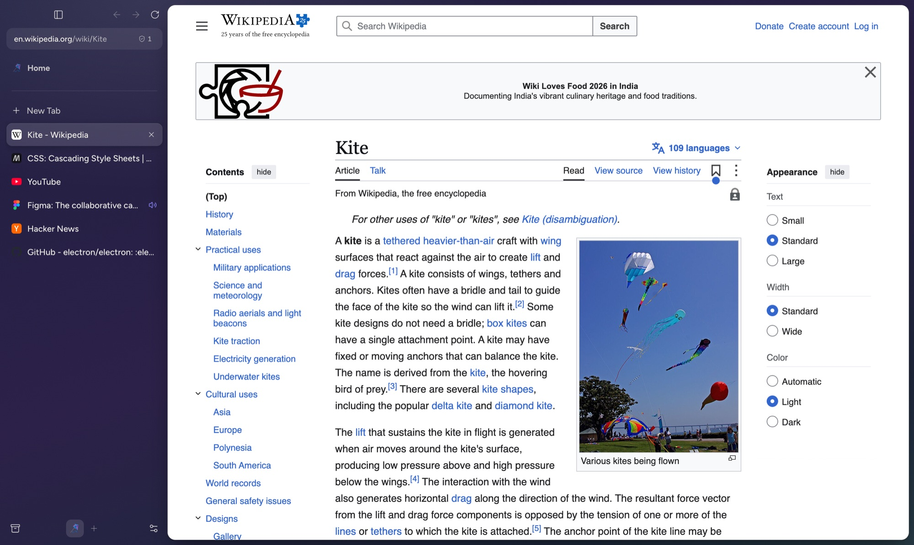
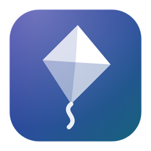

Tabs in a sidebar
Names you can read, with pinned pages, Favorites and folders. Tabs you stop using move to the Archive after 12 hours.


Kite DownloadFree · open source · for Mac
Apple Silicon · Intel Mac · about 115 MB
A small working copy. Go on, click a tab.
Most browsers pile tabs across the top until you can't read them. Kite puts them in a sidebar, files them into Spaces, and quietly archives the ones you've stopped using. So the only thing on screen is the page you came for.
Names you can read, with pinned pages, Favorites and folders. Tabs you stop using move to the Archive after 12 hours.

Open tabs, notes, history, Spaces and 40 actions. Already open? Kite switches to it instead of making a copy.

Two to four pages next to each other or stacked, with dividers you drag.

Work, study and home get their own tabs, icon and colours, with separate logins if you want.

Shields are on from the first page. Kite never reports what you do, and there's no account to make.
Kite is an early release built on Electron. It is not yet a replacement for a hardened browser if security is your main concern.
common ad and tracker requests blocked in our own test
Version 0.1.0 for macOS. Free and open source under the MIT licence.
Windows and Linux can be built from source · All releases